Soru 1Cevap: A
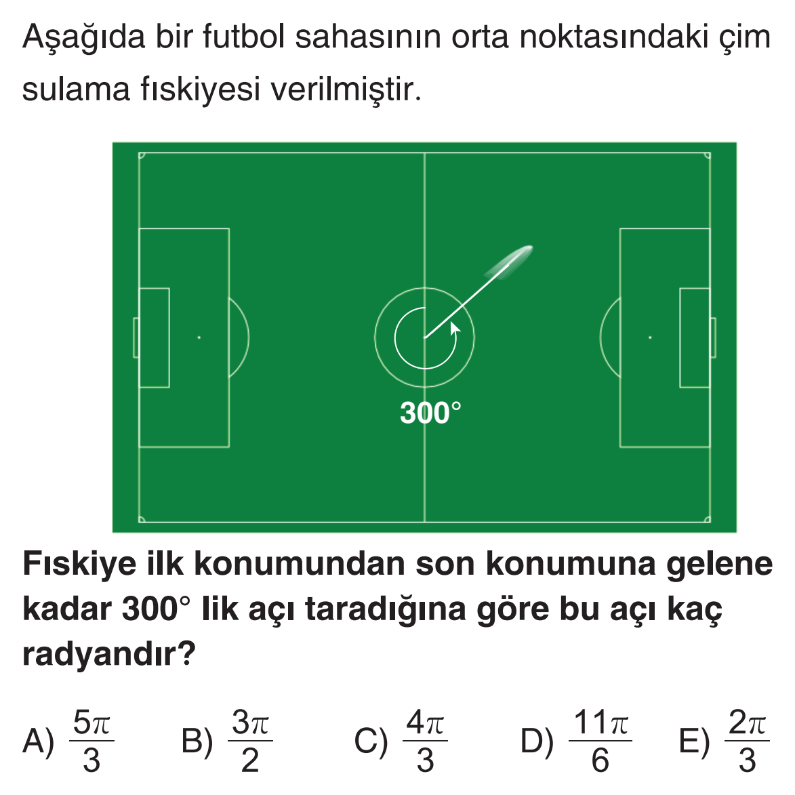
Çözüm
- $\frac{D}{180} = \frac{R}{\pi}$ → $R = \frac{300\pi}{180}$.
- Sadeleştirilir: $\frac{300}{180} = \frac53$.
- $300^\circ = \frac{5\pi}{3}$ radyan.
Cevap: A
Soru 2Cevap: E
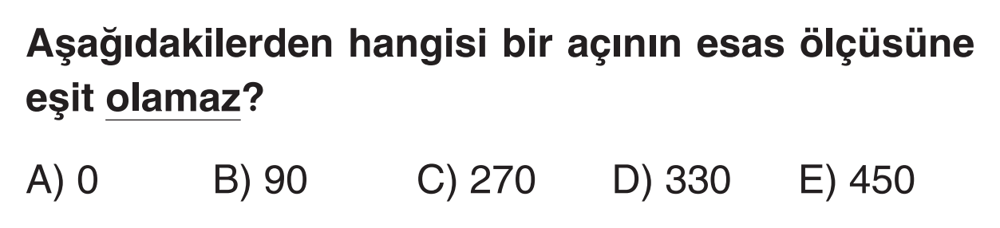
Çözüm
- Esas ölçü $[0^\circ, 360^\circ)$ aralığındadır.
- $0, 90, 270, 330$ bu aralıktadır.
- $450^\circ$ esas ölçü olamaz.
Cevap: E
Soru 3Cevap: B
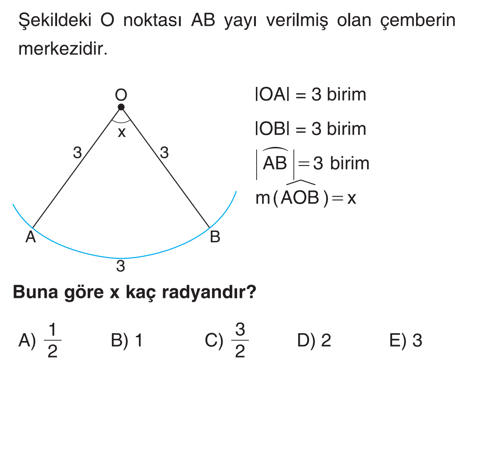
Çözüm
- Bir çemberde yay uzunluğu $= r\cdot\theta$ ($\theta$ radyan).
- $3 = 3\cdot x$
- $x = 1$ radyan (tanım gereği: yarıçapa eşit yayı gören açı).
Cevap: B
Soru 4Cevap: E
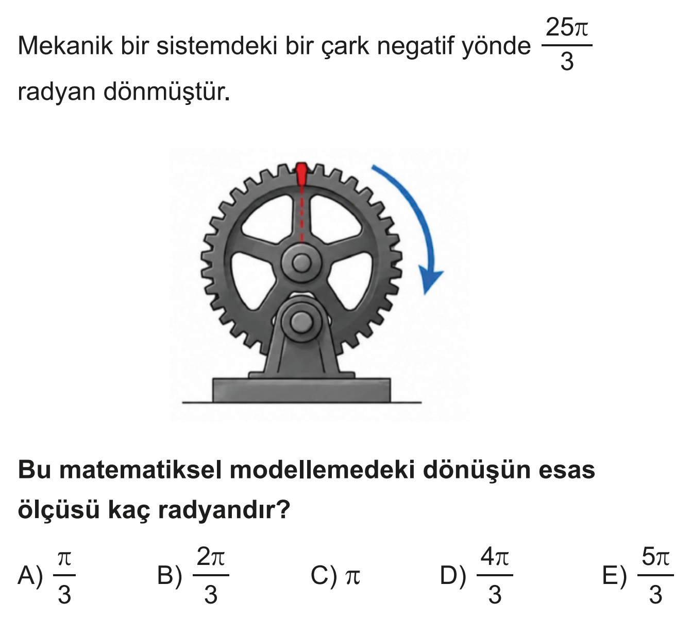
Çözüm
- $-\frac{25\pi}{3}$'e $2\pi$'nin katı eklenir: $-\frac{25\pi}{3} + 10\pi$.
- $= \frac{-25\pi + 30\pi}{3}$
- $= \frac{5\pi}{3}$.
Cevap: E
Soru 5Cevap: A
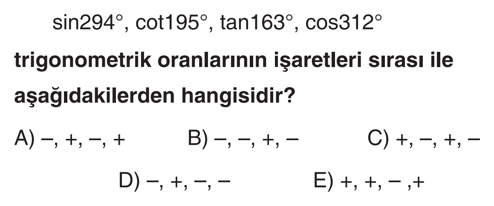
Çözüm
- $294^\circ$ IV. bölge → $\sin < 0$; $195^\circ$ III. bölge → $\cot > 0$.
- $163^\circ$ II. bölge → $\tan < 0$; $312^\circ$ IV. bölge → $\cos > 0$.
- İşaretler $-, +, -, +$.
Cevap: A
Soru 6Cevap: C
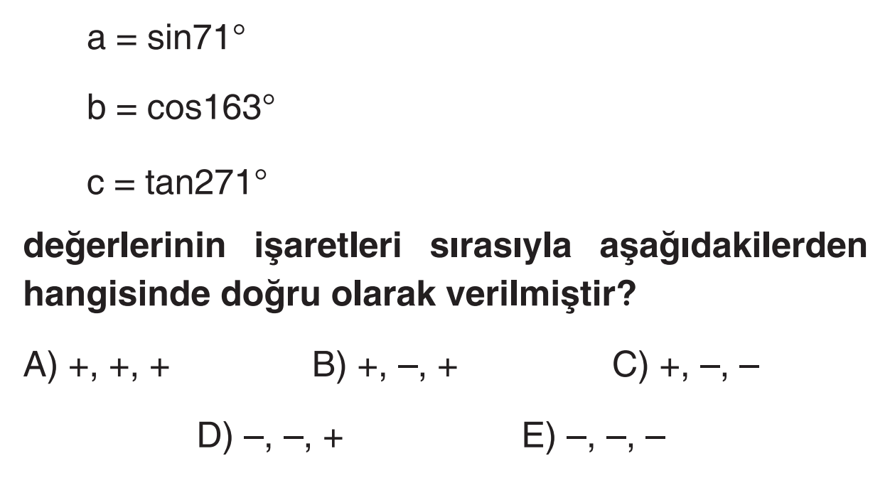
Çözüm
- $71^\circ$ I. bölge → $a > 0$.
- $163^\circ$ II. bölge → $\cos < 0$, $b < 0$.
- $271^\circ$ IV. bölge → $\tan < 0$, $c < 0$. $+, -, -$.
Cevap: C
Soru 7Cevap: A
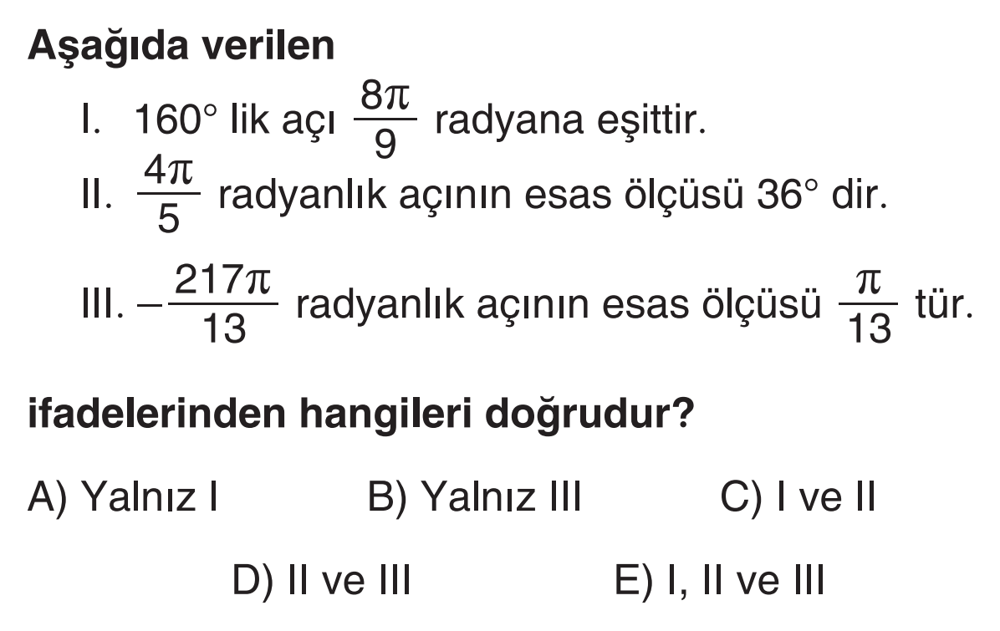
Çözüm
- I: $160\cdot\frac{\pi}{180} = \frac{8\pi}{9}$ ✓.
- II: $\frac{4\pi}{5} = 144^\circ$; zaten $[0, 360^\circ)$'de, esas ölçüsü $144^\circ$ ✗.
- III: $-\frac{217\pi}{13} + 18\pi = \frac{17\pi}{13}$ ✗. Yalnız I.
Cevap: A
Soru 8Cevap: C
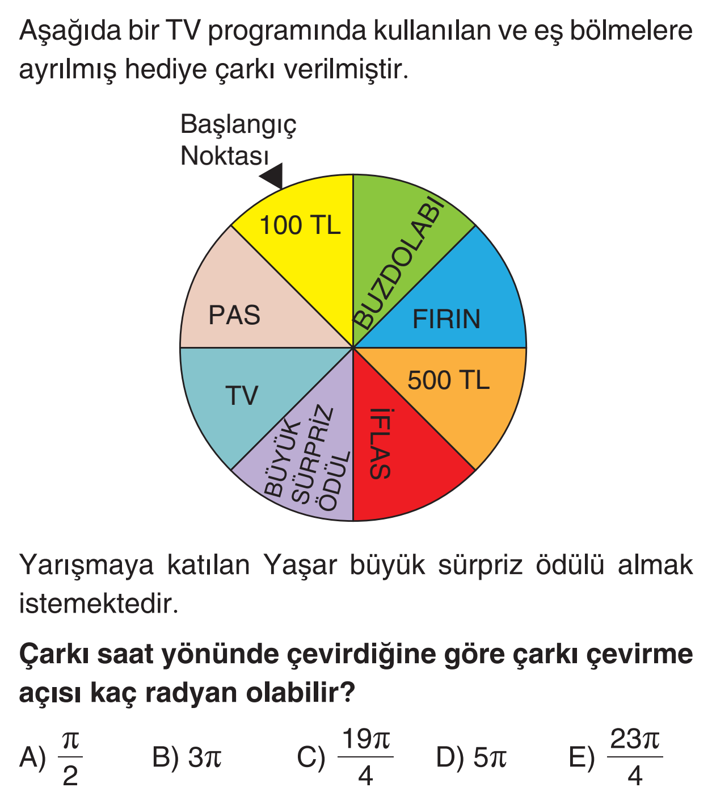
Çözüm
- 8 eş bölme → her biri $45^\circ$. Saat yönünde dönüşte göstergeye, onun saat yönünün tersindeki dilimler gelir: PAS, TV, Büyük Sürpriz.
- Büyük sürpriz ödül $3\cdot45^\circ = 135^\circ = \frac{3\pi}{4}$ dönüşte gelir; dönüş $\frac{3\pi}{4} + 2k\pi$ olmalı.
- $\frac{19\pi}{4} = 4\pi + \frac{3\pi}{4}$ ✓.
Cevap: C
Soru 9Cevap: D
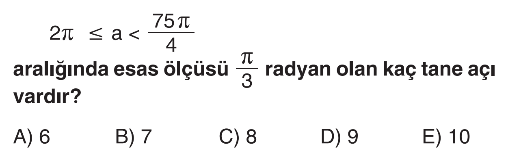
Çözüm
- Esas ölçüsü $\frac{\pi}{3}$ olan açılar $\frac{\pi}{3} + 2k\pi$.
- $2\pi \le \frac{\pi}{3} + 2k\pi < \frac{75\pi}{4}$ → $\frac56 \le k < \frac{221}{24} \approx 9{,}2$.
- $k = 1, 2, …, 9$ → 9 açı.
Cevap: D
Soru 10Cevap: D
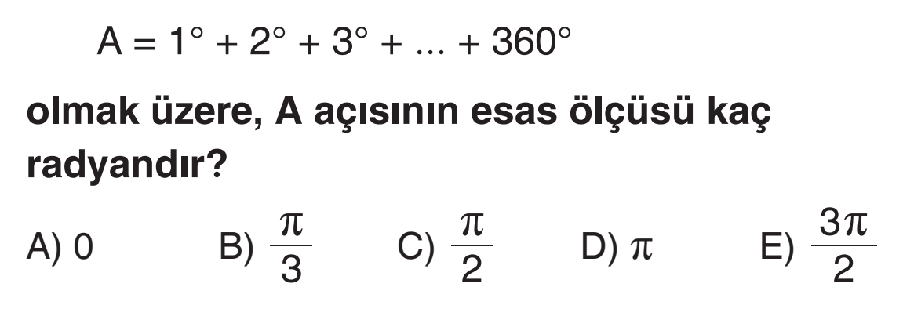
Çözüm
- $A = 1 + 2 + … + 360 = \frac{360\cdot361}{2} = 64980^\circ$.
- $64980 = 180\cdot360 + 180$.
- Esas ölçü $180^\circ = \pi$ radyan.
Cevap: D
Soru 11Cevap: D
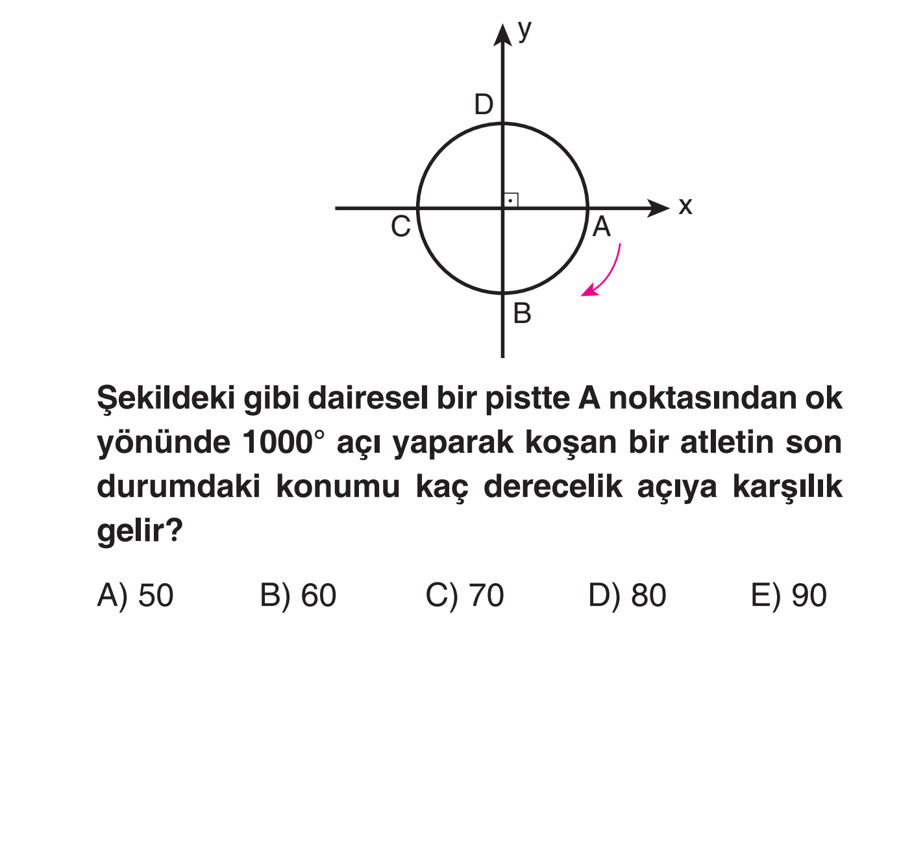
Çözüm
- $1000^\circ = 2\cdot360^\circ + 280^\circ$.
- Atlet A'dan saat yönünde $280^\circ$ ilerler; bu konum A'dan saat yönünün tersinde $360^\circ - 280^\circ = 80^\circ$'dir.
- Son konum $80^\circ$'lik açıya karşılık gelir.
Cevap: D
Soru 12Cevap: B
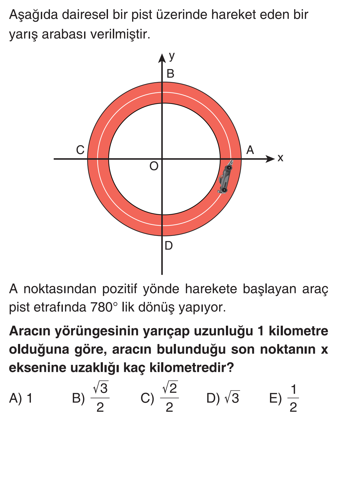
Çözüm
- $780^\circ = 2\cdot360^\circ + 60^\circ$ → araç $60^\circ$'lik konumda.
- Birim çemberde noktanın x eksenine uzaklığı $|\sin60^\circ|$.
- $\frac{\sqrt3}{2}$ km.
Cevap: B
Soru 13Cevap: E
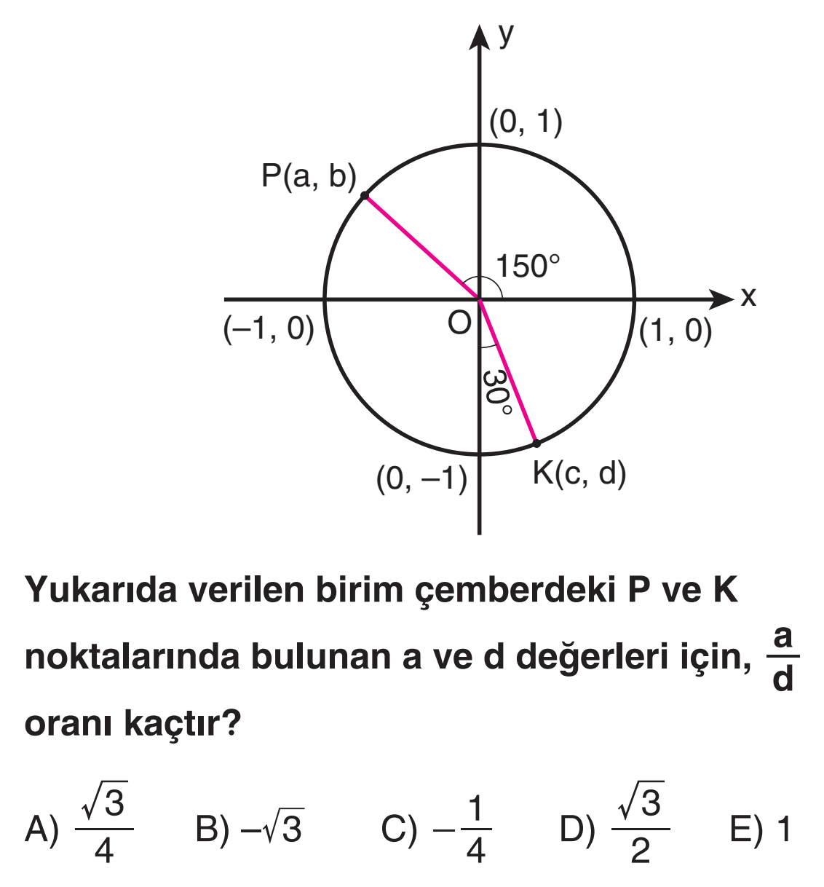
Çözüm
- P, $150^\circ$'de: $a = \cos150^\circ = -\frac{\sqrt3}{2}$.
- K, $-y$ ekseniyle $30^\circ$ → $300^\circ$'de: $d = \sin300^\circ = -\frac{\sqrt3}{2}$.
- $\frac{a}{d} = 1$.
Cevap: E
Soru 14Cevap: D
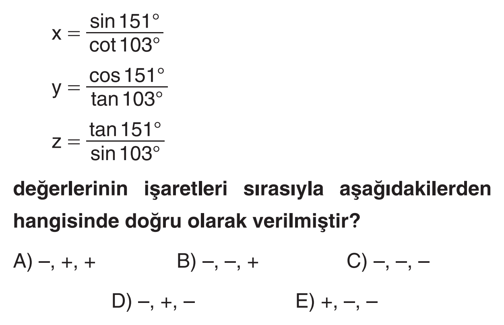
Çözüm
- $\sin151^\circ > 0$, $\cos151^\circ < 0$, $\tan151^\circ < 0$; $\cot103^\circ < 0$, $\tan103^\circ < 0$, $\sin103^\circ > 0$.
- $x = \frac{+}{-} < 0$, $y = \frac{-}{-} > 0$, $z = \frac{-}{+} < 0$.
- $-, +, -$.
Cevap: D
Soru 15Cevap: E
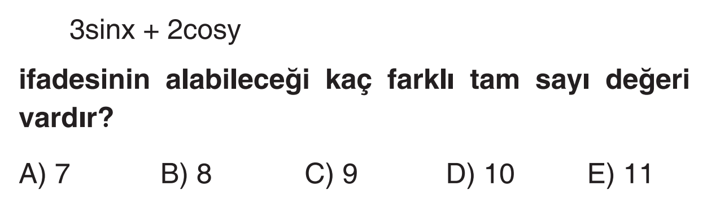
Çözüm
- $x$, $y$ bağımsız: $-3 \le 3\sin x \le 3$, $-2 \le 2\cos y \le 2$.
- $-5 \le 3\sin x + 2\cos y \le 5$ ve aradaki her değer alınır.
- Tam sayılar $-5, …, 5$ → 11 tane.
Cevap: E
Soru 16Cevap: A
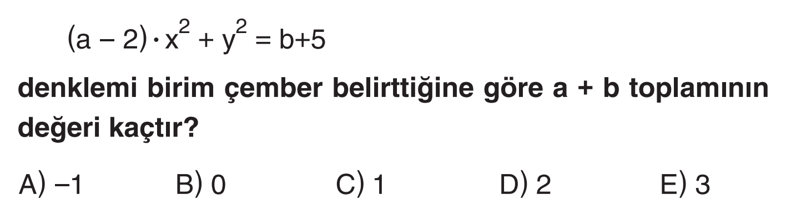
Çözüm
- Birim çember: $x^2 + y^2 = 1$.
- $a - 2 = 1$ → $a = 3$; $b + 5 = 1$ → $b = -4$.
- $a + b = -1$.
Cevap: A
Soru 17Cevap: E
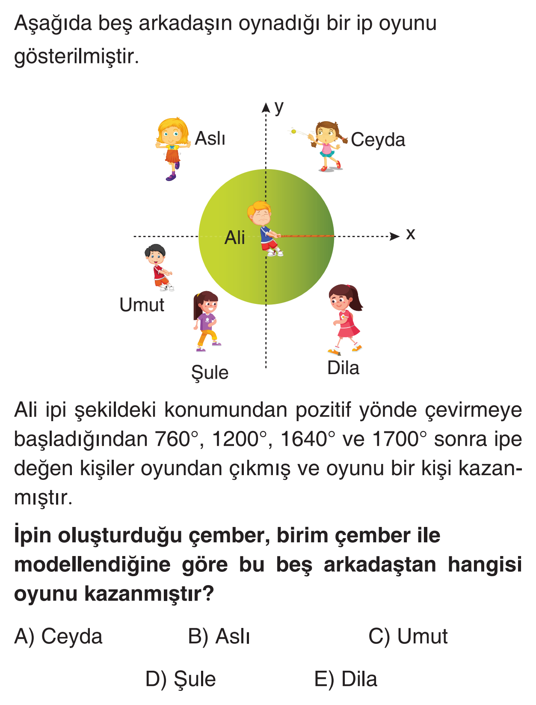
Çözüm
- Esas ölçüler: $760^\circ \to 40^\circ$, $1200^\circ \to 120^\circ$, $1640^\circ \to 200^\circ$, $1700^\circ \to 260^\circ$.
- Sırasıyla Ceyda (I. bölge), Aslı (II. bölge), Umut ($200^\circ$ civarı), Şule ($260^\circ$ civarı) oyundan çıkar.
- Kazanan Dila.
Cevap: E
Soru 18Cevap: B
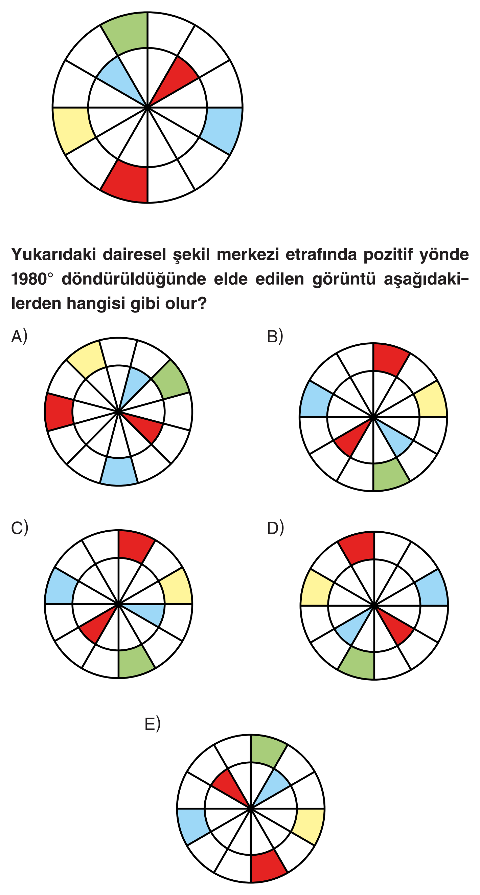
Çözüm
- $1980^\circ = 5\cdot360^\circ + 180^\circ$ → şekil yarım tur döner.
- Yarım turda her renkli bölme merkeze göre tam karşısına geçer: üstteki yeşil alta, alttaki kırmızı üste, sarı sağa, mavi sola.
- İçteki mavi sağ alta, içteki kırmızı sol alta geçer: B.
Cevap: B
Soru 19Cevap: D
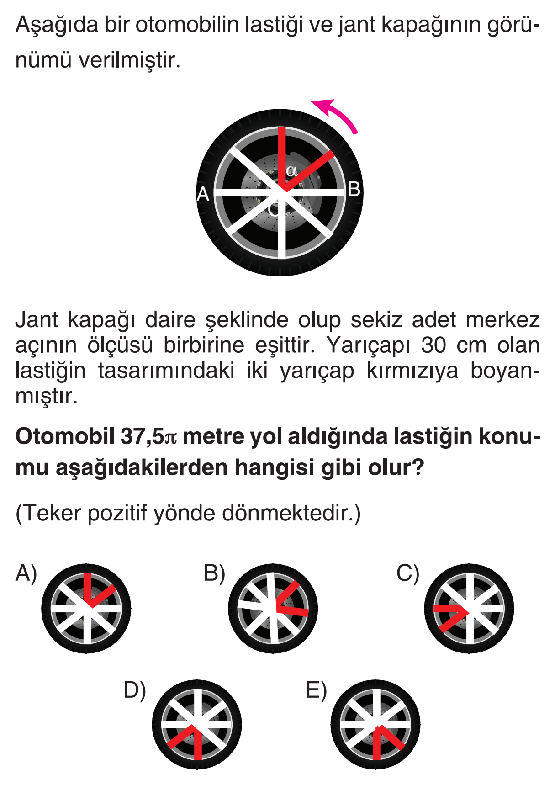
Çözüm
- Lastik bir turda $2\pi\cdot0{,}3 = 0{,}6\pi$ m yol alır.
- $\frac{37{,}5\pi}{0{,}6\pi} = 62{,}5$ tur → 62 tam tur + yarım tur.
- Kırmızı yarıçaplar $180^\circ$ döner: D.
Cevap: D
Soru 20Cevap: C
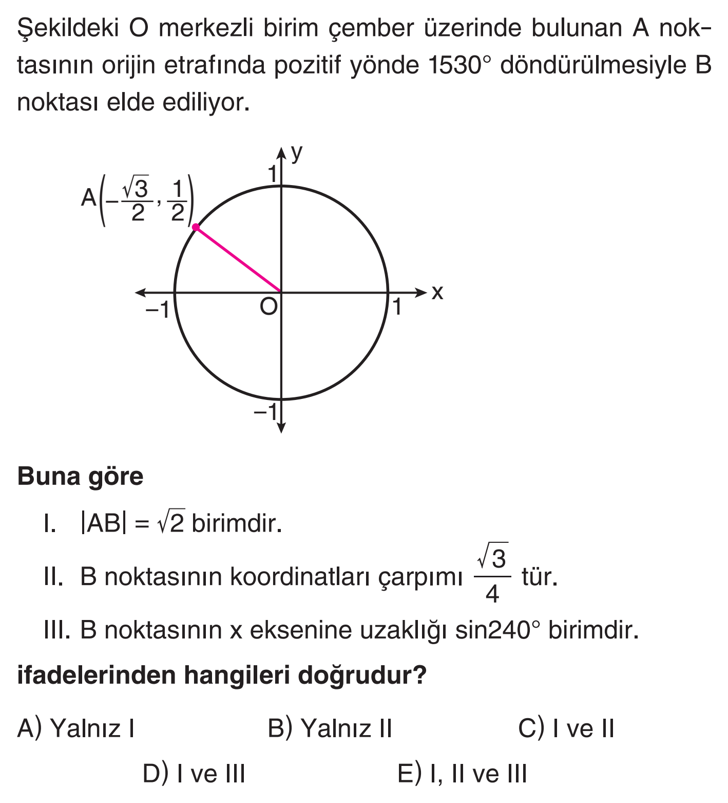
Çözüm
- A, $150^\circ$'de; $1530^\circ = 4\cdot360^\circ + 90^\circ$ → B, $240^\circ$'de: $B\left(-\frac12, -\frac{\sqrt3}{2}\right)$.
- $\widehat{AOB} = 90^\circ$ → $|AB| = \sqrt2$ (I ✓); çarpım $\frac{\sqrt3}{4}$ (II ✓).
- x eksenine uzaklık $|\sin240^\circ| = \frac{\sqrt3}{2}$; $\sin240^\circ$ negatiftir (III ✗). I ve II.
Cevap: C